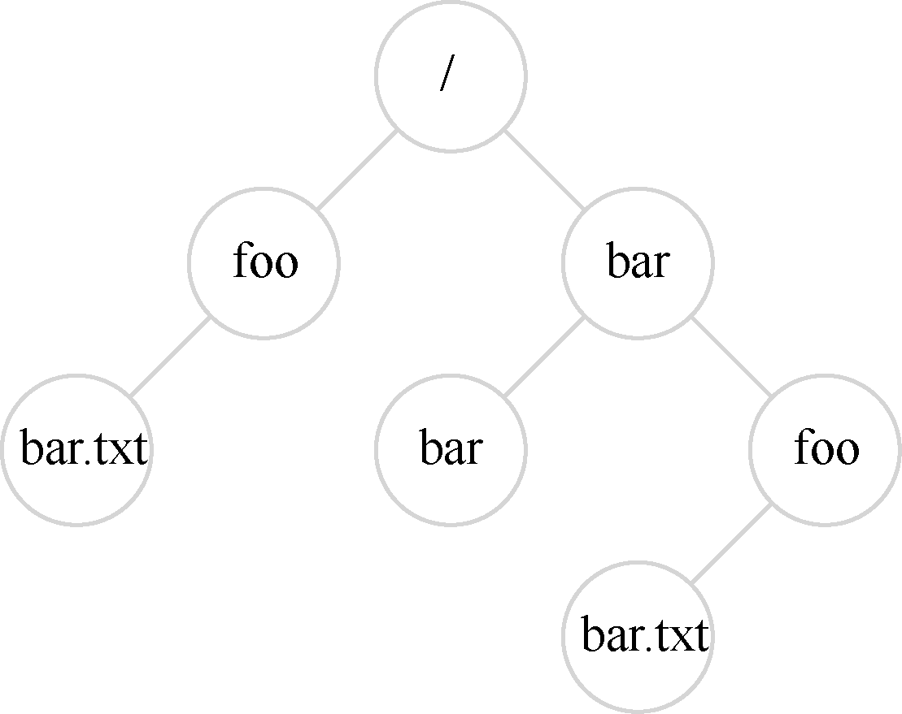

到目前为止，我们看到了两项关键操作系统技术的发展：进程，它是虚拟化的CPU；地址空间，它是虚拟化的内存。在这两种抽象共同作用下，程序运行时就好像它在自己的私有独立世界中一样，好像它有自己的处理器（或多处理器），好像它有自己的内存。这种假象使得对系统编程变得更容易，因此现在不仅在台式机和服务器上盛行，而且在所有可编程平台上越来越普遍，包括手机等在内。
在这一部分，我们加上虚拟化拼图中更关键的一块：持久存储（persistent storage）。永久存储设备永久地（或至少长时间地）存储信息，如传统硬盘驱动器（hard disk drive）或更现代的固态存储设备（solid-state storage device）。持久存储设备与内存不同。内存在断电时，其内容会丢失，而持久存储设备会保持这些数据不变。因此，操作系统必须特别注意这样的设备：用户用它们保存真正关心的数据。
关键问题：如何管理持久存储设备
操作系统应该如何管理持久存储设备？都需要哪些API？实现有哪些重要方面？
接下来几章会讨论管理持久数据的一些关键技术，重点是如何提高性能及可靠性。但是，我们先从总体上看看API：你在与UNIX 文件系统交互时会看到的接口。
39.1 文件和目录¶
随着时间的推移，存储虚拟化形成了两个关键的抽象。第一个是文件（file）。文件就是一个线性字节数组，每个字节都可以读取或写入。每个文件都有某种低级名称（low-level name），通常是某种数字。用户通常不知道这个名字（我们稍后会看到）。由于历史原因，文件的低级名称通常称为inode 号（inode number）。我们将在以后的章节中学习更多关于inode 的知识。现在，只要假设每个文件都有一个与其关联的inode 号。
在大多数系统中，操作系统不太了解文件的结构（例如，它是图片、文本文件还是C代码）。相反，文件系统的责任仅仅是将这些数据永久存储在磁盘上，并确保当你再次请求数据时，得到你原来放在那里的内容。做到这一点并不像看起来那么简单！
第二个抽象是目录（directory）。一个目录，像一个文件一样，也有一个低级名字（即inode 号），但是它的内容非常具体：它包含一个（用户可读名字，低级名字）对的列表。例如，假设存在一个低级别名称为“10”的文件，它的用户可读的名称为“foo”。“foo”所在的目录因此会有条目（“foo”，“10”），将用户可读名称映射到低级名称。目录中的每个条目都指向文件或其他目录。通过将目录放入其他目录中，用户可以构建任意的目录树（directory tree，或目录层次结构，directory hierarchy），在该目录树下存储所有文件和目录。
目录层次结构从根目录（root directory）开始（在基于UNIX 的系统中，根目录就记为“/”），并使用某种分隔符（separator）来命名后续子目录

图39.1 目录树示例
（sub-directories），直到命名所需的文件或目录。例如，如果用户在根目录中创建了一个目录foo，然后在目录foo中创建了一个文件bar.txt，我们就可以通过它的绝对路径名（absolute pathname）来引用该文件，在这个例子中，它将是/foo/bar.txt。更复杂的目录树，请参见图39.1。示例中的有效目录是/，/foo，/bar，/bar/bar，/bar/foo，有效的文件是/foo/bar.txt 和/bar/foo/bar.txt。目录和文件可以具有相同的名称，只要它们位于文件系统树的不同位置（例如，图中有两个名为bar.txt 的文件：/foo/bar.txt 和/bar/foo/bar.txt）。
提示：请仔细考虑命名
命名是计算机系统的一个重要方面[SK09]。在UNIX 系统中，你几乎可以想到的所有内容都是通过文件系统命名的。除了文件、设备、管道，甚至进程[K84]都可以在一个看似普通的旧文件系统中看到。这种命名的一致性简化了系统的概念模型，使系统更简单、更模块化。因此，无论何时创建系统或接口，都要仔细考虑你使用的是什么名称。
你可能还会注意到，这个例子中的文件名通常包含两部分：bar 和txt，以句点分隔。第一部分是任意名称，而文件名的第二部分通常用于指示文件的类型（type），例如，它是C代码（例如.c）还是图像（例如.jpg），或音乐文件（例如.mp3）。然而，这通常只是一个惯例（convention）：一般不会强制名为main.c 的文件中包含的数据确实是C 源代码。
因此，我们可以看到文件系统提供的了不起的东西：一种方便的方式来命名我们感兴趣的所有文件。名称在系统中很重要，因为访问任何资源的第一步是能够命名它。在UNIX系统中，文件系统提供了一种统一的方式来访问磁盘、U 盘、CD-ROM、许多其他设备上的文件，事实上还有很多其他的东西，都位于单一目录树下。
39.2 文件系统接口¶
现在让我们更详细地讨论文件系统接口。我们将从创建、访问和删除文件的基础开始。你可能会认为这很简单，但在这个过程中，你会发现用于删除文件的神秘调用，称为unlink()。希望阅读本章之后，你不再困惑！
39.3 创建文件¶
我们将从最基本的操作开始：创建一个文件。这可以通过open 系统调用完成。通过调用open()并传入O_CREAT 标志，程序可以创建一个新文件。下面是示例代码，用于在当前工作目录中创建名为“foo”的文件。
int fd = open("foo", O_CREAT | O_WRONLY | O_TRUNC);
函数open()接受一些不同的标志。在本例中，程序创建文件（O_CREAT），只能写入该文件，因为以（O_WRONLY）这种方式打开，并且如果该文件已经存在，则首先将其截断为零字节大小，删除所有现有内容（O_TRUNC）。
补充：creat()系统调用
创建文件的旧方法是调用creat()，如下所示：
int fd = creat("foo");
你可以认为creat()是open()加上以下标志：O_CREAT | O_WRONLY | O_TRUNC。因为open()可以创建一个文件，所以creat()的用法有些失宠（实际上，它可能就是实现为对open()的一个库调用）。然而，它确实在UNIX 知识中占有一席之地。特别是，有人曾问Ken Thompson，如果他重新设计UNIX，做法会有什么不同，他回答说：“我拼写creat 时会加上e”。
open()的一个重要方面是它的返回值：文件描述符（file descriptor）。文件描述符只是一个整数，是每个进程私有的，在UNIX 系统中用于访问文件。因此，一旦文件被打开，你就可以使用文件描述符来读取或写入文件，假定你有权这样做。这样，一个文件描述符就是一种权限（capability）[L84]，即一个不透明的句柄，它可以让你执行某些操作。另一种看待文件描述符的方法，是将它作为指向文件类型对象的指针。一旦你有这样的对象，就可以调用其他“方法”来访问文件，如read()和write()。下面你会看到如何使用文件描述符。
39.4 读写文件¶
一旦我们有了一些文件，当然就会想要读取或写入。我们先读取一个现有的文件。如果在命令行键入，我们就可以用cat 程序，将文件的内容显示到屏幕上。
prompt> echo hello > foo
prompt> cat foo
hello
prompt>
在这段代码中，我们将程序echo 的输出重定向到文件foo，然后文件中就包含单词“hello”。然后我们用cat 来查看文件的内容。但是，cat 程序如何访问文件foo？
为了弄清楚这个问题，我们将使用一个非常有用的工具，来跟踪程序所做的系统调用。在Linux 上，该工具称为strace。其他系统也有类似的工具（参见macOS X 上的dtruss，或某些较早的UNIX 变体上的truss）。strace 的作用就是跟踪程序在运行时所做的每个系统调用，然后将跟踪结果显示在屏幕上供你查看。
提示：使用strace（和类似工具）
strace 工具提供了一种非常棒的方式，来查看程序在做什么。通过运行它，你可以跟踪程序生成的系统调用，查看参数和返回代码，通常可以很好地了解正在发生的事情。
该工具还接受一些非常有用的参数。例如，-f 跟踪所有fork 的子进程，-t 报告每次调用的时间，-e trace=open,close,read,write 只跟踪对这些系统调用的调用，并忽略所有其他调用。还有许多更强大的标志，请阅读手册页，弄清楚如何利用这个奇妙的工具。
下面是一个例子，使用strace 来找出cat 在做什么（为了可读性删除了一些调用）。
prompt> strace cat foo
...
open("foo", O_RDONLY|O_LARGEFILE) = 3
read(3, "hello\n", 4096) = 6
write(1, "hello\n", 6) = 6
hello
read(3, "", 4096) = 0
close(3) = 0
...
prompt>
cat 做的第一件事是打开文件准备读取。我们应该注意几件事情。首先，该文件仅为读取而打开（不写入），如O_RDONLY 标志所示。其次，使用64 位偏移量（O_LARGEFILE）。最后，open()调用成功并返回一个文件描述符，其值为3。
你可能会想，为什么第一次调用open()会返回3，而不是0 或1？事实证明，每个正在运行的进程已经打开了3 个文件：标准输入（进程可以读取以接收输入），标准输出（进程可以写入以便将信息显示到屏幕），以及标准错误（进程可以写入错误消息）。这些分别由文件描述符0、1 和2 表示。因此，当你第一次打开另一个文件时（如上例所示），它几乎肯定是文件描述符3。
打开成功后，cat 使用read()系统调用重复读取文件中的一些字节。read()的第一个参数是文件描述符，从而告诉文件系统读取哪个文件。一个进程当然可以同时打开多个文件，因此描述符使操作系统能够知道某个特定的读取引用了哪个文件。第二个参数指向一个用于放置read()结果的缓冲区。在上面的系统调用跟踪中，strace 显示了这时的读取结果（“hello”）。第三个参数是缓冲区的大小，在这个例子中是4KB。对read()的调用也成功返回，这里返回它读取的字节数（6，其中包括“hello”中的5 个字母和一个行尾标记）。
此时，你会看到strace 的另一个有趣结果：对write()系统调用的一次调用，针对文件描述符1。如上所述，此描述符被称为标准输出，因此用于将单词“Hello”写到屏幕上，这正是cat 程序要做的事。但是它直接调用write()吗？也许（如果它是高度优化的）。但是，如果不是，那么可能会调用库例程printf()。在内部，printf()会计算出传递给它的所有格式化细节，并最终对标准输出调用write，将结果显示到屏幕上。
然后，cat 程序试图从文件中读取更多内容，但由于文件中没有剩余字节，read()返回0，程序知道这意味着它已经读取了整个文件。因此，程序调用close()，传入相应的文件描述符，表明它已用完文件“foo”。该文件因此被关闭，对它的读取完成了。
写入文件是通过一组类似的步骤完成的。首先，打开一个文件准备写入，然后调用write()系统调用，对于较大的文件，可能重复调用，然后调用close()。使用strace 追踪写入文件，也许针对你自己编写的程序，或者追踪dd 实用程序，例如dd if = foo of = bar。
39.5 读取和写入，但不按顺序¶
到目前为止，我们已经讨论了如何读取和写入文件，但所有访问都是顺序的（sequential）。也就是说，我们从头到尾读取一个文件，或者从头到尾写一个文件。
但是，有时能够读取或写入文件中的特定偏移量是有用的。例如，如果你在文本文件上构建了索引并利用它来查找特定单词，最终可能会从文件中的某些随机（random）偏移量中读取数据。为此，我们将使用lseek()系统调用。下面是函数原型：
off_t lseek(int fildes, off_t offset, int whence);
第一个参数是熟悉的（一个文件描述符）。第二个参数是偏移量，它将文件偏移量定位到文件中的特定位置。第三个参数，由于历史原因而被称为whence，明确地指定了搜索的执行方式。以下摘自手册页：
If whence is SEEK_SET, the offset is set to offset bytes.
If whence is SEEK_CUR, the offset is set to its current
location plus offset bytes.
If whence is SEEK_END, the offset is set to the size of
the file plus offset bytes.
从这段描述中可见，对于每个进程打开的文件，操作系统都会跟踪一个“当前”偏移量，这将决定在文件中读取或写入时，下一次读取或写入开始的位置。因此，打开文件的抽象包括它具有当前偏移量，偏移量的更新有两种方式。第一种是当发生N 个字节的读或写时，N 被添加到当前偏移。因此，每次读取或写入都会隐式更新偏移量。第二种是明确的lseek，它改变了上面指定的偏移量。
补充：调用lseek()不会执行磁盘寻道
命名糟糕的系统调用lseek()让很多学生困惑，试图去理解磁盘以及其上的文件系统如何工作。不要混淆二者！lseek()调用只是在OS 内存中更改一个变量，该变量跟踪特定进程的下一个读取或写入开始的偏移量。如果发送到磁盘的读取或写入与最后一次读取或写入不在同一磁道上，就会发生磁盘寻道，因此需要磁头移动。更令人困惑的是，调用lseek()从文件的随机位置读取或写入文件，然后读取/写入这些随机位置，确实会导致更多的磁盘寻道。因此，调用lseek()肯定会导致在即将进行的读取或写入中进行搜索，但绝对不会导致任何磁盘I/O 自动发生。
请注意，调用lseek()与移动磁盘臂的磁盘的寻道（seek）操作无关。对lseek()的调用只是改变内核中变量的值。执行I/O 时，根据磁盘头的位置，磁盘可能会也可能不会执行实际的寻道来完成请求。
39.6 用fsync()立即写入¶
大多数情况下，当程序调用write()时，它只是告诉文件系统：请在将来的某个时刻，将此数据写入持久存储。出于性能的原因，文件系统会将这些写入在内存中缓冲（buffer）一段时间（例如5s 或30s）。在稍后的时间点，写入将实际发送到存储设备。从调用应用程序的角度来看，写入似乎很快完成，并且只有在极少数情况下（例如，在write()调用之后但写入磁盘之前，机器崩溃）数据会丢失。
但是，有些应用程序需要的不只是这种保证。例如，在数据库管理系统（DBMS）中，开发正确的恢复协议要求能够经常强制写入磁盘。
为了支持这些类型的应用程序，大多数文件系统都提供了一些额外的控制API。在UNIX中，提供给应用程序的接口被称为fsync(int fd)。当进程针对特定文件描述符调用fsync()时，文件系统通过强制将所有脏（dirty）数据（即尚未写入的）写入磁盘来响应，针对指定文件描述符引用的文件。一旦所有这些写入完成，fsync()例程就会返回。
以下是如何使用fsync()的简单示例。代码打开文件foo，向它写入一个数据块，然后调用fsync()以确保立即强制写入磁盘。一旦fsync()返回，应用程序就可以安全地继续前进，知道数据已被保存（如果fsync()实现正确，那就是了）。
int fd = open("foo", O_CREAT | O_WRONLY | O_TRUNC);
assert(fd > -1);
int rc = write(fd, buffer, size);
assert(rc == size);
rc = fsync(fd);
assert(rc == 0);
有趣的是，这段代码并不能保证你所期望的一切。在某些情况下，还需要fsync()包含foo 文件的目录。添加此步骤不仅可以确保文件本身位于磁盘上，而且可以确保文件（如果新创建）也是目录的一部分。毫不奇怪，这种细节往往被忽略，导致许多应用程序级别的错误[P+13]。
39.7 文件重命名¶
有了一个文件后，有时需要给一个文件一个不同的名字。在命令行键入时，这是通过mv 命令完成的。在下面的例子中，文件foo 被重命名为bar。
prompt> mv foo bar
利用strace，我们可以看到mv 使用了系统调用rename(char * old, char * new)，它只需要两个参数：文件的原来名称（old）和新名称（new）。
rename()调用提供了一个有趣的保证：它（通常）是一个原子（atomic）调用，不论系统是否崩溃。如果系统在重命名期间崩溃，文件将被命名为旧名称或新名称，不会出现奇怪的中间状态。因此，对于支持某些需要对文件状态进行原子更新的应用程序，rename()非常重要。
让我们更具体一点。想象一下，你正在使用文件编辑器（例如emacs），并将一行插入到文件的中间。例如，该文件的名称是foo.txt。编辑器更新文件并确保新文件包含原有内容和插入行的方式如下（为简单起见，忽略错误检查）：
int fd = open("foo.txt.tmp", O_WRONLY|O_CREAT|O_TRUNC);
write(fd, buffer, size); // write out new version of file
fsync(fd);
close(fd);
rename("foo.txt.tmp", "foo.txt");
在这个例子中，编辑器做的事很简单：将文件的新版本写入临时名称（foot.txt.tmp），使用fsync()将其强制写入磁盘。然后，当应用程序确定新文件的元数据和内容在磁盘上，就将临时文件重命名为原有文件的名称。最后一步自动将新文件交换到位，同时删除旧版本的文件，从而实现原子文件更新。
39.8 获取文件信息¶
除了文件访问之外，我们还希望文件系统能够保存关于它正在存储的每个文件的大量信息。我们通常将这些数据称为文件元数据（metadata）。要查看特定文件的元数据，我们可以使用stat()或fstat()系统调用。这些调用将一个路径名（或文件描述符）添加到一个文件中，并填充一个stat 结构，如下所示：
struct stat {
dev_t st_dev; /* ID of device containing file */
ino_t st_ino; /* inode number */
mode_t st_mode; /* protection */
nlink_t st_nlink; /* number of hard links */
uid_t st_uid; /* user ID of owner */
gid_t st_gid; /* group ID of owner */
dev_t st_rdev; /* device ID (if special file) */
off_t st_size; /* total size, in bytes */
blksize_t st_blksize; /* blocksize for filesystem I/O */
blkcnt_t st_blocks; /* number of blocks allocated */
time_t st_atime; /* time of last access */
time_t st_mtime; /* time of last modification */
time_t st_ctime; /* time of last status change */
};
你可以看到有关于每个文件的大量信息，包括其大小（以字节为单位），其低级名称（即inode 号），一些所有权信息以及有关何时文件被访问或修改的一些信息，等等。要查看此信息，可以使用命令行工具stat：
prompt> echo hello > file
prompt> stat file
File: 'file'
Size: 6 Blocks: 8 IO Block: 4096 regular file
Device: 811h/2065d Inode: 67158084 Links: 1
Access: (0640/-rw-r-----) Uid: (30686/ remzi) Gid: (30686/ remzi)
Access: 2011-05-03 15:50:20.157594748 -0500
Modify: 2011-05-03 15:50:20.157594748 -0500
Change: 2011-05-03 15:50:20.157594748 -0500
事实表明，每个文件系统通常将这种类型的信息保存在一个名为inode1的结构中。当我们讨论文件系统的实现时，会学习更多关于inode 的知识。就目前而言，你应该将inode看作是由文件系统保存的持久数据结构，包含上述信息。
39.9 删除文件¶
现在，我们知道了如何创建文件并按顺序访问它们。但是，如何删除文件？如果用过UNIX，你可能认为你知道：只需运行程序rm。但是，rm 使用什么系统调用来删除文件？
我们再次使用老朋友strace 来找出答案。下面删除那个讨厌的文件“foo”：
prompt> strace rm foo
...
unlink("foo") = 0
...
我们从跟踪的输出中删除了一堆不相关的内容，只留下一个神秘名称的系统调用unlink()。如你所见，unlink()只需要待删除文件的名称，并在成功时返回零。但这引出了一个很大的疑问：为什么这个系统调用名为“unlink”？为什么不就是“remove”或“delete”？要理解这个问题的答案，我们不仅要先了解文件，还有目录。
39.10 创建目录¶
除了文件外，还可以使用一组与目录相关的系统调用来创建、读取和删除目录。请注意，你永远不能直接写入目录。因为目录的格式被视为文件系统元数据，所以你只能间接更新目录，例如，通过在其中创建文件、目录或其他对象类型。通过这种方式，文件系统可以确保目录的内容始终符合预期。
要创建目录，可以用系统调用mkdir()。同名的mkdir 程序可以用来创建这样一个目录。让我们看一下，当我们运行mkdir 程序来创建一个名为foo 的简单目录时，会发生什么：
prompt> strace mkdir foo
...
mkdir("foo", 0777) = 0
...
prompt>
提示：小心强大的命令
程序rm 为我们提供了强大命令的一个好例子，也说明有时太多的权利可能是一件坏事。例如，要一次删除一堆文件，可以键入如下内容：
prompt> rm *
其中*将匹配当前目录中的所有文件。但有时你也想删除目录，实际上包括它们的所有内容。你可以告诉rm 以递归方式进入每个目录并删除其内容，从而完成此操作：
prompt> rm -rf *
如果你发出命令时碰巧是在文件系统的根目录，从而删除了所有文件和目录，这一小串字符会给你带来麻烦。哎呀！
因此，要记住强大的命令是双刃剑。虽然它们让你能够通过少量击键来完成大量工作，但也可能迅速而容易地造成巨大的伤害。
这样的目录创建时，它被认为是“空的”，尽管它实际上包含最少的内容。具体来说，空目录有两个条目：一个引用自身的条目，一个引用其父目录的条目。前者称为“.”（点）目录，后者称为“..”（点-点）目录。你可以通过向程序ls 传递一个标志（-a）来查看这些目录：
prompt> ls -a
./ ../
prompt> ls -al
total 8
drwxr-x--- 2 remzi remzi 6 Apr 30 16:17 ./
drwxr-x--- 26 remzi remzi 4096 Apr 30 16:17 ../
39.11 读取目录¶
既然我们创建了目录，也可能希望读取目录。实际上，这正是ls 程序做的事。让我们编写像ls 这样的小工具，看看它是如何做的。
不是像打开文件一样打开一个目录，而是使用一组新的调用。下面是一个打印目录内容的示例程序。该程序使用了opendir()、readdir()和closedir()这3 个调用来完成工作，你可以看到接口有多简单。我们只需使用一个简单的循环就可以一次读取一个目录条目，并打印目录中每个文件的名称和inode 编号。
int main(int argc, char *argv[]) {
DIR *dp = opendir(".");
assert(dp != NULL);
struct dirent *d;
while ((d = readdir(dp)) != NULL) {
printf("%d %s\n", (int) d->d_ino, d->d_name);
}
closedir(dp);
return 0;
}
下面的声明在struct dirent 数据结构中，展示了每个目录条目中可用的信息。
struct dirent {
char d_name[256]; /* filename */
ino_t d_ino; /* inode number */
off_t d_off; /* offset to the next dirent */
unsigned short d_reclen; /* length of this record */
unsigned char d_type; /* type of file */
};
由于目录只有少量的信息（基本上，只是将名称映射到inode 号，以及少量其他细节），程序可能需要在每个文件上调用stat()以获取每个文件的更多信息，例如其长度或其他详细信息。实际上，这正是ls 带有-l 标志时所做的事情。请试着对带有和不带有-l 标志的ls 运行strace，自己看看结果。
39.12 删除目录¶
最后，你可以通过调用rmdir()来删除目录（它由相同名称的程序rmdir 使用）。然而，与删除文件不同，删除目录更加危险，因为你可以使用单个命令删除大量数据。因此，rmdir()要求该目录在被删除之前是空的（只有“.”和“..”条目）。如果你试图删除一个非空目录，那么对rmdir()的调用就会失败。
39.13 硬链接¶
我们现在回到为什么删除文件是通过unlink()的问题，理解在文件系统树中创建条目的新方法，即通过所谓的link()系统调用。link()系统调用有两个参数：一个旧路径名和一个新路径名。当你将一个新的文件名“链接”到一个旧的文件名时，你实际上创建了另一种引用同一个文件的方法。命令行程序ln 用于执行此操作，如下面的例子所示：
prompt> echo hello > file
prompt> cat file
hello
prompt> ln file file2
prompt> cat file2
hello
在这里，我们创建了一个文件，其中包含单词“hello”，并称之为file。然后，我们用ln 程序创建了该文件的一个硬链接。在此之后，我们可以通过打开file 或file2 来检查文件。
link 只是在要创建链接的目录中创建了另一个名称，并将其指向原有文件的相同inode号（即低级别名称）。该文件不以任何方式复制。相反，你现在就有了两个人类可读的名称（file 和file2），都指向同一个文件。通过打印每个文件的inode 号，我们甚至可以在目录中看到这一点：
prompt> ls -i file file2
67158084 file
67158084 file2
prompt>
通过带-i 标志的ls，它会打印出每个文件的inode 编号（以及文件名）。因此，你可以看到实际上已完成的链接：只是对同一个inode 号（本例中为67158084）创建了新的引用。
现在，你可能已经开始明白unlink()名称的由来。创建一个文件时，实际上做了两件事。首先，要构建一个结构（inode），它将跟踪几乎所有关于文件的信息，包括其大小、文件块在磁盘上的位置等等。其次，将人类可读的名称链接到该文件，并将该链接放入目录中。
在创建文件的硬链接之后，在文件系统中，原有文件名（file）和新创建的文件名（file2）之间没有区别。实际上，它们都只是指向文件底层元数据的链接，可以在inode 编号67158084中找到。
因此，为了从文件系统中删除一个文件，我们调用unlink()。在上面的例子中，我们可以删除文件名file，并且仍然毫无困难地访问该文件：
prompt> rm file
removed 'file'
prompt> cat file2
hello
这样的结果是因为当文件系统取消链接文件时，它检查inode 号中的引用计数（reference count）。该引用计数（有时称为链接计数，link count）允许文件系统跟踪有多少不同的文件名已链接到这个inode。调用unlink()时，会删除人类可读的名称（正在删除的文件）与给定inode 号之间的“链接”，并减少引用计数。只有当引用计数达到零时，文件系统才会释放inode 和相关数据块，从而真正“删除”该文件。
当然，你可以使用stat()来查看文件的引用计数。让我们看看创建和删除文件的硬链接时，引用计数是什么。在这个例子中，我们将为同一个文件创建 3 个链接，然后删除它们。仔细看链接计数！
prompt> echo hello > file
prompt> stat file
... Inode: 67158084 Links: 1 ...
prompt> ln file file2
prompt> stat file
... Inode: 67158084 Links: 2 ...
prompt> stat file2
... Inode: 67158084 Links: 2 ...
prompt> ln file2 file3
prompt> stat file
... Inode: 67158084 Links: 3 ...
prompt> rm file
prompt> stat file2
... Inode: 67158084 Links: 2 ...
prompt> rm file2
prompt> stat file3
... Inode: 67158084 Links: 1 ...
prompt> rm file3
39.14 符号链接¶
还有一种非常有用的链接类型，称为符号链接（symbolic link），有时称为软链接（soft link）。事实表明，硬链接有点局限：你不能创建目录的硬链接（因为担心会在目录树中创建一个环）。你不能硬链接到其他磁盘分区中的文件（因为inode 号在特定文件系统中是唯一的，而不是跨文件系统），等等。因此，人们创建了一种称为符号链接的新型链接。
要创建这样的链接，可以使用相同的程序ln，但使用-s 标志。下面是一个例子。
prompt> echo hello > file
prompt> ln -s file file2
prompt> cat file2
hello
如你所见，创建软链接看起来几乎相同，现在可以通过文件名称file 以及符号链接名称file2 来访问原始文件。
但是，除了表面相似之外，符号链接实际上与硬链接完全不同。第一个区别是符号链接本身实际上是一个不同类型的文件。我们已经讨论过常规文件和目录。符号链接是文件系统知道的第三种类型。对符号链接运行stat 揭示了一切。
prompt> stat file
... regular file ...
prompt> stat file2
... symbolic link ...
运行ls 也揭示了这个事实。如果仔细观察ls 输出的长格式的第一个字符，可以看到常规文件最左列中的第一个字符是“-”，目录是“d”，软链接是“l”。你还可以看到符号链接的大小（本例中为4 个字节），以及链接指向的内容（名为file 的文件）。
prompt> ls -al
drwxr-x--- 2 remzi remzi 29 May 3 19:10 ./
drwxr-x--- 27 remzi remzi 4096 May 3 15:14 ../
-rw-r----- 1 remzi remzi 6 May 3 19:10 file
lrwxrwxrwx 1 remzi remzi 4 May 3 19:10 file2 -> file
file2 是4 个字节，原因在于形成符号链接的方式，即将链接指向文件的路径名作为链接文件的数据。因为我们链接到一个名为file 的文件，所以我们的链接文件file2 很小（4个字节）。如果链接到更长的路径名，链接文件会更大。
prompt> echo hello > alongerfilename
prompt> ln -s alongerfilename file3
prompt> ls -al alongerfilename file3
-rw-r----- 1 remzi remzi 6 May 3 19:17 alongerfilename
lrwxrwxrwx 1 remzi remzi 15 May 3 19:17 file3 -> alongerfilename
最后，由于创建符号链接的方式，有可能造成所谓的悬空引用（dangling reference）。
prompt> echo hello > file
prompt> ln -s file file2
prompt> cat file2
hello
prompt> rm file
prompt> cat file2
cat: file2: No such file or directory
正如你在本例中看到的，符号链接与硬链接完全不同，删除名为file 的原始文件会导致符号链接指向不再存在的路径名。
39.15 创建并挂载文件系统¶
我们现在已经了解了访问文件、目录和特定类型链接的基本接口。但是我们还应该讨论另一个话题：如何从许多底层文件系统组建完整的目录树。这项任务的实现是先制作文件系统，然后挂载它们，使其内容可以访问。
为了创建一个文件系统，大多数文件系统提供了一个工具，通常名为mkfs（发音为“make fs”），它就是完成这个任务的。思路如下：作为输入，为该工具提供一个设备（例如磁盘分区，例如/dev/sda1），一种文件系统类型（例如ext3），它就在该磁盘分区上写入一个空文件系统，从根目录开始。mkfs 说，要有文件系统！
但是，一旦创建了这样的文件系统，就需要在统一的文件系统树中进行访问。这个任务是通过mount 程序实现的（它使底层系统调用mount()完成实际工作）。mount 的作用很简单：以现有目录作为目标挂载点（mount point），本质上是将新的文件系统粘贴到目录树的这个点上。
这里举个例子可能很有用。想象一下，我们有一个未挂载的ext3 文件系统，存储在设备分区/dev/sda1 中，它的内容包括：一个根目录，其中包含两个子目录a 和b，每个子目录依次包含一个名为foo 的文件。假设希望在挂载点/home/users 上挂载此文件系统。我们会输入以下命令：
prompt> mount -t ext3 /dev/sda1 /home/users
如果成功，mount 就让这个新的文件系统可用了。但是，请注意现在如何访问新的文件系统。要查看那个根目录的内容，我们将这样使用ls：
prompt> ls /home/users/
a b
如你所见，路径名/home/users/现在指的是新挂载目录的根。同样，我们可以使用路径名/home/users/a 和/home/users/b 访问文件a 和b。最后，可以通过/home/users/a/foo 和/home/users/b/foo 访问名为foo 的两个文件。因此mount 的美妙之处在于：它将所有文件系统统一到一棵树中，而不是拥有多个独立的文件系统，这让命名统一而且方便。
要查看系统上挂载的内容，以及在哪些位置挂载，只要运行mount 程序。你会看到类似下面的内容：
/dev/sda1 on / type ext3 (rw)
proc on /proc type proc (rw)
sysfs on /sys type sysfs (rw)
/dev/sda5 on /tmp type ext3 (rw)
/dev/sda7 on /var/vice/cache type ext3 (rw)
tmpfs on /dev/shm type tmpfs (rw)
AFS on /afs type afs (rw)
这个疯狂的组合展示了许多不同的文件系统，包括ext3（标准的基于磁盘的文件系统）、proc 文件系统（用于访问当前进程信息的文件系统）、tmpfs（仅用于临时文件的文件系统）和AFS（分布式文件系统）。它们都“粘”在这台机器的文件系统树上。
39.16 小结¶
UNIX 系统（实际上任何系统）中的文件系统接口看似非常基本，但如果你想掌握它，还有很多需要了解的东西。当然，没有什么比直接（大量地）使用它更好。所以请用它！当然，要读更多的书。像往常一样，Stevens 的书[SR05]是开始的地方。
我们浏览了基本的接口，希望你对它们的工作原理有所了解。更有趣的是如何实现一个满足API 要求的文件系统，接下来将详细介绍这个主题。
参考资料¶
[K84]“Processes as Files”Tom J. Killian USENIX, June 1984介绍/proc 文件系统的文章，其中每个进程都可以被视为伪文件系统中的文件。这是一个聪明的想法，你仍然可以在现代UNIX 系统中看到。
[L84]“Capability-Based Computer Systems”Henry M. Levy Digital Press, 1984早期基于权限的系统的完美概述。
[P+13]“Towards Efficient, Portable Application-Level Consistency”Thanumalayan S. Pillai, Vijay Chidambaram, Joo-Young Hwang, Andrea C. Arpaci-Dusseau, and Remzi H.Arpaci-Dusseau HotDep ’13, November 2013我们自己的研究工作，表明了应用程序在将数据提交到磁盘时可能会有多少错误。特别是关于文件系统假设“溜”到应用程序中，从而导致应用程序只有在特定文件系统上运行时才能正常工作。
[SK09]“Principles of Computer System Design”Jerome H. Saltzer and M. Frans Kaashoek Morgan-Kaufmann,2009对于任何对该领域感兴趣的人来说，这是系统的代表作，是必读的。这是作者在麻省理工学院教授系统的方式。希望你阅读一遍，然后再读几遍，直至完全理解。
[SR05]“Advanced Programming in the UNIX Environment”W. Richard Stevens and Stephen A. Rago Addison-Wesley, 2005我们可能引用了这本书几十万次。如果你想成为一个出色的系统程序员，这本书对你很有用。
作业¶
在这次作业中，我们将熟悉本章中描述的API 是如何工作的。为此，你只需编写几个不同的程序，主要基于各种UNIX 实用程序。
问题¶
1．Stat：实现一个自己的命令行工具stat，实现对一个文件或目录调用stat() 函数即可。将文件的大小、分配的磁盘块数、引用数等信息打印出来。当目录的内容发生变化时，目录的引用计数如何变化？有用的接口：stat()。
2．列出文件：编写一个程序，列出指定目录内容。如果没有传参数，则程序仅输出文件名。当传入-l 参数时，程序需要打印出文件的所有者，所属组权限以及stat() 函数获得的一些其他信息。另外还要支持传入要读取的目录作为参数，比如myls -l directory。如果没有传入目录参数，则用当前目录作为默认参数。有用的接口：stat()、opendir()、readdir()和getcwd()。
3．Tail：编写一个程序，输出一个文件的最后几行。这个程序运行后要能跳到文件末尾附近，然后一直读取指定的数据行数，并全部打印出来。运行程序的命令是mytail -n file，其中参数n 是指从文件末尾数起要打印的行数。有用的接口：stat()、lseek()、open()、read()和close()。
4．递归查找：编写一个程序，打印指定目录树下所有的文件和目录名。比如，当不带参数运行程序时，会从当前工作目录开始递归打印目录内容以及其所有子目录的所有内容，直到打印完以当前工作目录为根的整棵目录树。如果传入了一个目录参数，则以这个目录为根开始递归打印。可以添加更多的参数来限制程序的递归遍历操作，可以参照find 命令。有用的接口：自己想一下。
-
一些文件系统中，这些结构名称相似但略有不同，如dnodes。但基本的想法是相似的。 ↩